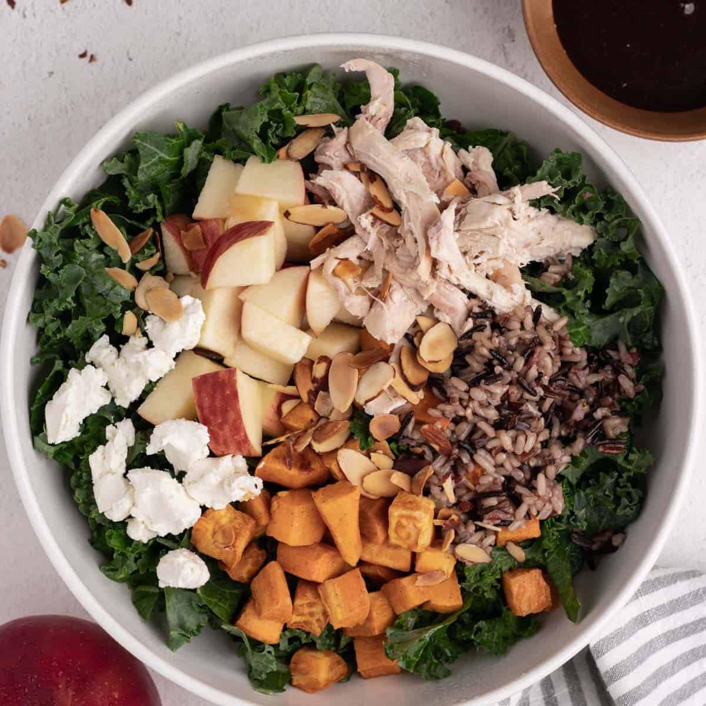

While I can't talk specifics, a part of my job includes working with the IT department as a whole and documenting the different services we offer to the organization.
The nature of cybersecurity is very confidential, so to paraphrase my responsibilties here: I manage vulnerabilities for a certain scope and determine how they should be prioritized.
A crucial aspect of the job is to raise awareness for cybersecurity. Most cyber attacks happen through human error, and the best way to prevent it is to be educated about it!
After working on projects, I usually catch up with one of my best friends, Elly, for lunch. She works at Warner Music Group so we usually meet at the middle at 30 Rockefeller.
This is the final stretch. Usually most of my meetings are scheduled after lunch, so the remainig day I take meetings and socialize with the office
When I have time in between meetings and last minute work, I like to go to the showroom and admire the items. Interns have also had opportunities to take official tours of the Maison Madison and Meatpacking stores.